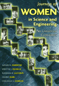

|
|
"Batting
Cleanup, Bill Conlin"
Kerrane,
Kevin, and Dick Schaap
Three decades of reporting from one of the most provocative sports
writers in the country
240 pp • 6x9 • Spring 1997
cloth 1-56639-541-0
EAN 978-1-56639-541-0
|
|
|
The
Betrayal of the Urban Poor
Slessarev,
Helene
A devastating account of inadequate attempts to provide economic
equality for the urban poor
256 pp • 5.5x8.25 • Spring 1997
paper 1-56639-543-7
EAN 978-1-56639-543-4
cloth 1-56639-542-9
EAN 978-1-56639-542-7
|
|
|
But
Still, Like Air, I'll Rise
New Asian American Plays
Houston,
Velina Hasu, and Roberta Uno
A rich anthology of American plays by playwrights of diverse
Asian ancestry and an equally diverse offering of aesthetic sensibilities
520 pp • 6x9 • Spring 1997
paper 1-56639-538-0
EAN 978-1-56639-538-0
cloth 1-56639-537-2
EAN 978-1-56639-537-3
|
|
|
The
Chicago Cubs Encyclopedia
Holtzman,
Jerome, and George Vass
Everything you always wanted to know about a team often referred
to as the "lovable losers"
568 pp • 9x12 • Spring 1997
cloth 1-56639-547-X
EAN 978-1-56639-547-2
|
|
|
Critical
White Studies
Looking Behind the Mirror
Delgado,
Richard, and Jean Stefancic
Over 100 closely edited selections critically examine the notion
of whiteness and its relation to social power
704 pp • 7x10 • Spring 1997
paper 1-56639-532-1
EAN 978-1-56639-532-8
cloth 1-56639-531-3
EAN 978-1-56639-531-1
|
|
|
The
Gender Knot
Unraveling Our Patriarchal Legacy
Johnson,
Allan G.
A compelling approach to gender inequality that empowers both
men and women to be part of the solution instead of just part
of the problem
304 pp • 6x9 • Spring 1997
paper 1-56639-519-4
EAN 978-1-56639-519-9
cloth 1-56639-518-6
EAN 978-1-56639-518-2
|
|
|
The
German Greens
Paradox between Movement and Party
Mayer,
Margit, John Ely, and Michael Schatzschneider
Critical essays analyze the crucial tensions shaping the first
ten years of the German Greens
352 pp • 6x9 • Spring 1997
paper 1-56639-516-X
EAN 978-1-56639-516-8
cloth 1-56639-515-1
EAN 978-1-56639-515-1
|
|
|
Hikes
Around Philadelphia
Newman,
Boyd, and Linda Newman
An invaluable guide to forty fascinating hikes within a short
drive of Philadelphia
224 pp • 5.5x8.25• Spring 1997
paper 1-56639-530-5
EN 978-1-56639-530-4
cloth 1-56639-529-1
EAN 978-1-56639-529-8
|
| 
|
How
I Got Over
Clara Ward and the World-Famous Ward Singers
Ward-Royster,
Willa, Toni Rose, and Horace Clarence Boyer
The telling story of one of the country's best-known gospel groups
263 pp • 6x9 • Spring 1997
cloth 1-56639-489-9
EAN 978-1-56639-489-5
|
| 
|
Journeys
of Women in Science and Engineering
No Universal Constants
Ambrose,
Susan A., Kristin L. Dunkle, Barbara B. Lazarus, Indira Nair, and
Deborah A. Harkus
A rich resource of personal profiles of 88 women in the sciences
and engineering
512 pp • 7x10 • Spring 1997
cloth 1-56639-527-5
EAN 978-1-56639-527-4
|
|
|
Law
and the Environment
A Multidisciplinary Reader
Percival,
Robert V., and Dorothy C. Alevizatos
A comprehensive examination of society's multi-disciplinary response
to the difficult challenges posed by environmental problems
464 pp • 7x10 • Spring 1997
paper 1-56639-524-0
EAN 978-1-56639-524-3
cloth 1-56639-523-2
EAN 978-1-56639-523-6
|
|
|
Lesbian
and Bisexual Identities
Constructing Communities, Constructing Selves
Esterberg,
Kristin G.
A revealing examination of how lesbian and bisexual women come
to see themselves and what those identities mean to them
216 pp • 5.5x8.25 • Spring 1997
paper 1-56639-510-0
EAN 978-1-56639-510-6
cloth 1-56639-509-7
EAN 978-1-56639-509-0
|
|
|
The
Memory Bird
Survivors of Sexual Abuse
Malone,
Caroline, Linda Farthing, and Lorraine Marce
The moving voices of survivors of childhood sexual abuse evoke
the process of feeling pain, remembering, and healing the wounds
of the past
295 pp • 5.5x8.25 • Spring 1997
paper 1-56639-526-7
EAN 978-1-56639-526-7
cloth 1-56639-525-9
EAN 978-1-56639-525-0
|
| 
|
Money
for Change
Social Movement Philanthropy at the Haymarket People's Fund
Ostrander,
Susan A.
From the inside out, this study of a democratic philantrophy
probes the world of social movement funding
New in Paperback!
256 pp • 5.5x8.25 • Fall 1995
paper 1-56639-364-7
EAN 978-1-56639-364-5
|
| 
|
The
New American History
Foner,
Eric, ed.
Leading historians define key trends in the field of history
and reflect on how the experience of previously neglected groups
has fundamentally redefined U.S. history
Revised and Expanded Edition
400 pp • 6x9 • Spring 1997
paper 1-56639-552-6
EAN 978-1-56639-552-6
cloth 1-56639-551-8
EAN 978-1-56639-551-9
|
|
|
The
New Censors
Movies and the Culture Wars
Lyons,
Charles
Focuses on the movie industry and the role pressure groups and
government has played in shaping contemporary images
248 pp • 5.5x8.25 • Spring 1997
paper 1-56639-512-7
EAN 978-1-56639-512-0
cloth 1-56639-511-9
EAN 978-1-56639-511-3
|
|
|
Performing
Asian America
Race and Ethnicity on the Contemporary Stage
Lee, Josephine
A fascinating inquiry into the territory of race and ethnicity
in American theater
256 pp • 6x9 • Spring 1997
cloth 1-56639-502-X
EAN 978-1-56639-502-1
|
|
|
Something
Left to Lose
Personal Relations and Survival among New York's Homeless
Dordick,
Gwendolyn A.
A rare in-depth look at how homeless people construct their social
worlds
224 pp • 5.5x8.25 • Spring 1997
paper 1-56639-514-3
EAN 978-1-56639-514-4
cloth 1-56639-513-5
EAN 978-1-56639-513-7
|
|
|
Staging
Strikes
Workers' Theatre and the American Labor Movement
Hyman,
Collette A.
Art and politics share the spotlight in a lively history of workers'
theater and culture
224 pp • 5.5x8.25 • Spring 1997
cloth 1-56639-504-6
EAN 978-1-56639-504-5
|
|
|
Unzipped
Genes
Taking Charge of Baby-Making in the New Millennium
Rothblatt,
Martine
A revolutionary code of ethics to guide childbirth decisions
in the brave new world of biotechnology
201 pp • 5.5x8.25 • Spring 1997
paper 1-56639-554-2
EAN 978-1-56639-554-0
cloth 1-56639-522-4
EAN 978-1-56639-522-9
|
| 
|
We
Can't Eat Prestige
The Women Who Organized Harvard
Hoerr,
John
The story of a 15-year fight to form a union of office and lab
workers at Harvard University
280 pp • 6x9 • Spring 1997
cloth 1-56639-535-6
EAN 978-1-56639-535-9
|
|
|
The
White Sox Encyclopedia
Lindberg,
Richard C., and Mark Fletcher
An "A to Z" reference of the South Side team that has long been
neglected by chroniclers of the National Pastime
592 pp • 9x12 • Spring 1997
cloth 1-56639-449-X
EAN 978-1-56639-449-9
|
|
|
Women's
Activism in Contemporary Russia
Racioppi,
Linda, and Katherine O’Sullivan See
A penetrating look at the experiences of women activists and
their organizations in Russia since perestroika
277 pp • 5.5x8.25 • Spring 1997
paper 1-56639-521-6
EAN 978-1-56639-521-2
cloth 1-56639-520-8
EAN 978-1-56639-520-5
|
|
|
Women's
Political Voice
How Women are Transforming the Practice and Study of Politics
Flammang,
Janet
A new feminist approach to political science and politics
Updated and Expanded Edition
480 pp • 6x9 • Spring 1997
paper 1-56639-534-8
EAN 978-1-56639-534-2
|
|
|
Women,
International Development, and Politics
The Bureaucratic Mire
Staudt,
Kathleen
New edition reflects the intensified interest in women's empowerment
in developing countries demonstrated by the Beijing Conference
356 pp • 6x9 • Fall 1989
paper 1-56639-546-1
EAN 978-1-56639-546-5
cloth 0-87722-658-X
EAN 978-0-87722-658-1
|
|
|
Writing
Wrongs
The Work of Wallace Shawn
King,
W. D., and John Lahr
A rare insight into the life and literary work of actor and playwright
Wallace Shawn
264 pp • 5x9 • Spring 1997
cloth 1-56639-517-8
EAN 978-1-56639-517-5
|
|
|
The
Yankees
An Illustrated History
Sullivan,
George, and John Powers
If you've ever cheered—or even booed—the fabulous Yankees,
don't miss this unique tribute to the greatest dynasty in baseball
history
467 pp • 8.5x11 • Spring 1997
cloth 1-56639-553-4
EAN 978-1-56639-553-3
|